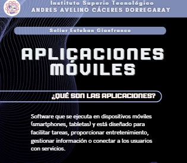
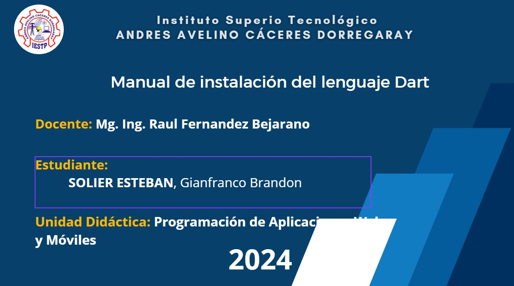
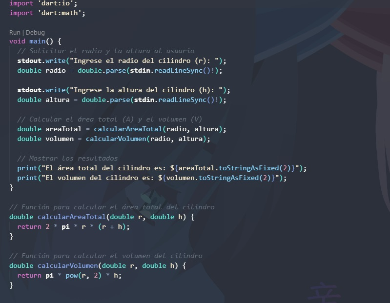

Semana 1: Infografía
Creación de una infografía introductoria sobre los fundamentos de la programación móvil.
Descargar

Semana 2: Guía de Instalación
Guía detallada sobre la instalación y configuración del entorno de desarrollo en Dart.
Descargar

Semana 3: Ejercicios de Dart
Desarrollo de los 3 ejercicios hecho en dart.
Semana 4 (1ra parte): Ejercicios de Dart
Desarrollo de los 3 ejercicios hecho en dart.
Semana 4 (2da parte): Ejercicios de Dart
Desarrollo de los 3 ejercicios hecho en dart.
Semana 5: Ejercicios de Dart
Desarrollo de los 4 ejercicios hecho en dart.
Semana 6 (POO): Ejercicios de Dart
Desarrollo de los 4 ejercicios hecho en dart.
Semana 7: Ejemplos
Desarrollo de los 3 ejercicios hecho en dart.
Semana 7 (Con listas): Ejercicios de Dart
Desarrollo de los 4 ejercicios hecho en dart.